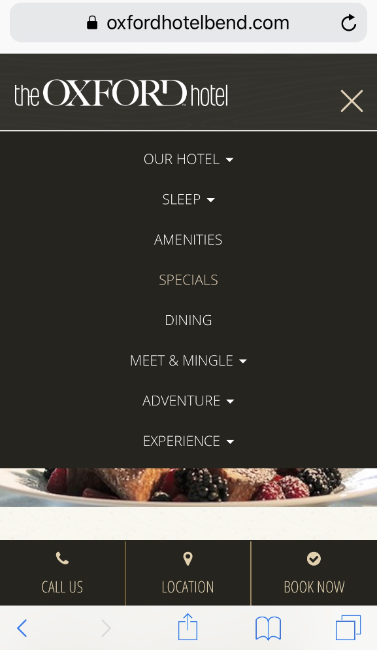

User Testing of Mobile Site
For this assigment, I asked testers to navigate the mobile website for The Oxford Hotel, a boutique hotel in Bend, Oregon.
Purpose of Test:
- The main purpose of this test was to examine the usability of this mobile site and the room search feature in particular, and compare findings with my previous analysis of the desktop site.
Testers (5):
- Ages 14, 16, 40-49, 40-49, 50-59
As in the last study, these testers were asked to take look at the home page and gave their initial impressions. They were then asked to attempt some specific tasks.
I expected that this group of testers would encounter the same issues with finding a room with a kitchen, and might have trouble returning to the home screen from an incomplete reservation.
Home Page: Overall Impressions
Oxford Hotel Mobile image
Scrolling through the home page, three of the testers commented on the "bouncing" arrow. It wasn't clear to one if this meant scroll down, or click on the location button which the arrow was pointing to.
One tester said that the text that appeared over the images was distracting and got in the way of the pictures.
The testers commented that it seemed like a nice hotel, and somewhat fancy.
Two of the testers read some of the blurbs on the site out loud as they scrolled -- "eco-chic" and "urban-organic". The testers were amused by these phrases (which is probably not the reaction the hotel is hoping for).
Scenario 1: Find a room with a kitchen for 1 adult for 2 nights in May.
Most of the testers went to the hamburger menu and guessed that Sleep would get them to rooms, but seemed puzzled by use of the label "Sleep" here.
 Menu openedThe Room option under Sleep displayed a list of rooms by name (Cascade Suite, for example). Two testers started clicking on the room titles which brought up pictures and a paragraph description of the room. One tester commented that a list of amenities rather than a paragraph to read through would be better. These testers abandoned this method and went to "Book Now" with specific dates. This brought up a few room options, and also the amenities icons where they found kitchens.
Two testers started with Book Now. After some frustration trying to find a kitchen by images and text, one guessed that "suites" would have a kitchen, starting looking at suites, and found images under one of the suites that included a kitchen. The other tester spent some time looking at images until finally finding one that included a kitchen.
The last tester also started with Book Now, scrolled past the photos and paragraphs of text, zeroing in on the icons and quickly found a kitchen.
Scenario 2: What activities or attractions are nearby?
As with the analysis of the full site, this turned out to be a test to see how easy it was to get back to the home page from an abandoned reservation. Two of the testers tried the back button which resulted in frustration. One eventually tried the logo, saying this wasn't obvious, but it worked. The other got stuck in endless buffering, and ended up typing in the url again. The three other testers used the hotel icon/logo to return home.
The testers were all able to find activities nearby through the Adventure and Experience menu options. One tester found the activity map and used that to find what was nearby. Another tester who had completed the test for me earlier and was watching, had not realized this map existed. It took some scrolling to get to, and this tester's device was older and smaller than everyone elses.
Scenario 3: Are there places to eat out nearby?
The testers all went back to Dining in the hamburger menu. One went to Experience first before remember there was a Dining option.
Usability Summary
Usability testing of the Oxford Hotel mobile website revealed that it has some of the same issues as the full website, and a few new issues. Three of the testers had buffering issues when searching for rooms by date. One eventually typed in the hotel website address again. Buffering/slowness wasn't an issue with the full site.
The hamburger menu and diplay of menu options vertically seems like a plus for the mobile site. The testers seemed to remember the options after seeing them once, and returned to the hamburger menu quickly. The horizontal display of options on the full site gives users more to think about, and seems fine for a full site where a user might be willing to spend more time poking around.
Using the label Sleep to find rooms doesn't really make sense, however. The testers seemed puzzled by this. A suggestion for improvement would be to keep this simple and use the expected term Rooms instead.
As was the case with the full site, returning home from the booking process wasn't easy for all the testers. Having a more obvious home button is another suggestion for improvement.
Some testers were more willing than others to read through text to find what they need. The preference seems stronger on a mobile site for information to be presented in lists or images rather than in paragraphs of text.
As with the full site, another suggestion for improvement would be to allow users to choose the amenities they want and filter their search by amenities. Another option could be to have the amenities icons display first, rather than the descriptive paragraphs.
Although this site seems mostly well designed for mobile use, some of the design features were distracting to the testers. The bouncing arrow, which is unobtrusive on the full site, is large and was annoying to some of the testers on the mobile version.
The text boxes which only cover a fraction of the images on the full site, end up almost covering the entire images on the mobile site.
What works well on a full screen, is a distraction on a mobile device. It doesn't seem like these design elements were adjusted for mobile use. The images on this site are very nice and it seems a shame to cover them up with unnecessary text.
Full website compared to mobileA suggestion for improvement would be to eliminate or separate the text from the images.
I thought it was interesting that the younger testers this week, as well the youngest tester last week, did not use the back button to try and return home. They knew the hotel name in the upper left corner would get them home, because as one tester stated, "this is what usually works", even though they also noted that this particular logo did not look clickable. This makes me wonder if having the company logo as home button became standard later on, and some of us who are older might still be using the back button mostly out of habit.